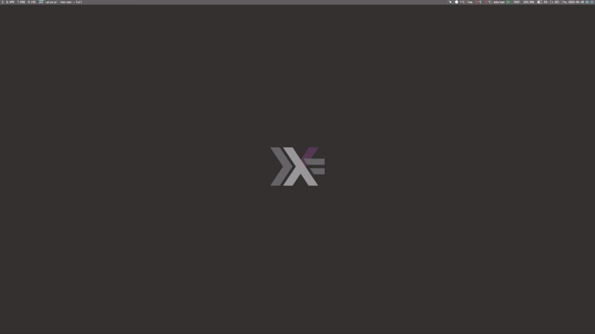
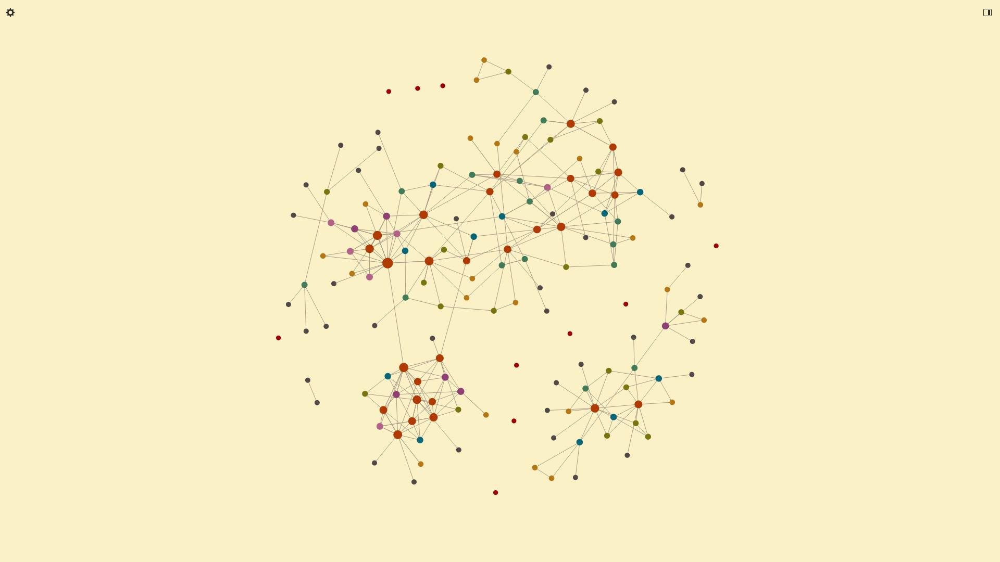

Contents
davfs2 or
TRAMP), … You get the idea.
High Level Structure¶
Topics¶
XMonad has a module called TopicSpace, which upgrades the X11 workspace—virtual desktop—concept to so-called topics. These are workspaces with a “theme” associated to them; for example, I have a topic for every project that I’m currently working on. This results in a clean separation of concerns. Plus, I always know where my windows are! Every topic has a directory and a “startup hook”, firing when the topic is switched to and empty, associated to it. While most convenient for programming related tasks—e.g., spawnghcid in the relevant directory
or automatically build and open this website—it’s also quite convenient
for mathematical projects.
I have set up special keybindings to bring up an Emacs session in the
topic directory, or spawn a terminal there. Switching to topics is done
fuzzily via the XMonad prompt, which means I only have to type a few
characters to get to my destination. This makes it feasible to have 30
topics, instead of the usual 9 or so, in the first place. As a result,
it’s rather fast to go from thinking about a certain problem to working
on it. When I’m already inside a project, I leverage Emacs’s built-in
project.el library to search through files and the like.

Files¶
Here I keep things relatively simple; I have a big “library” directory in which essentially all books or papers that I’ve ever read reside. This may sound a bit chaotic, but since I never interact with this as-a-directory it is actually the easiest and cleanest solution for me. To keep a bit of order, all files are named in a consistent and descriptive way:authors_title.pdf, where authors is a list of last
names of all authors separated by hyphens and title is the title of
the work, also separated by hyphens. For example:
pastro-street_double-of-a-monoidal-category.pdf
.xopp files, when I scribble on the
relevant PDFs in xournalpp; more on that later.
Instead of navigating to it, all interaction with the library is done
via hmenu, a small wrapper around dmenu to facilitate this kind of
behaviour. I merely have to press M-yI will be using Emacs style notation throughout the article. This
means that, for example, C-x a should be read as “hold down
control and press x, then release both and press a”. You can of
course safely ignore this, since the keys just serve illustrative
purposes. An important note for Emacs users, lest anyone be
confused: in XMonad, M- usually does not refer to the Meta
key, but to the modMask that the user specified. This is indeed
<Alt> by default, but many people understandably rebind this
straight away to something that’s less likely to interfere with
other programs. In my case, that’s the Super key, so M-s means
<Super>-s and not <Alt>-s.
and can then fuzzy search
through the directory. Once I’ve made a choice, PDFs are automatically
opened in zathura and .xopp files are opened in xournalpp.

My bibliography is organised in a similar spirit; see
Citations.
Note Taking¶
Handwritten Notes¶
For handwritten notes I… use real paper! A little elaboration is probably in order, having talked about.xopp files and xournalpp
above. I do have a Wacom tablet lying around and I’m quite happy
annotating PDFs with it. In lieu of printing everything out, this
alleviates a little bit of the usual pain with reading papers, like
coming back to one three weeks later and getting stuck on the same
calculation as last time. I do love those annotations!
However, there is just something deeply psychologically pleasing about
ordinary pen and paper—nothing beats drawing up the first version of
many ideas there. It’s a very “pure” experience: there’s no noise or
distractions, nothing that could break, no additional layer of
abstraction between you and the maths. Chalkboards—but not whiteboards,
with their ever empty markers—fall into this category as well,
especially when collaborating with others.
Not without my quirks (as I’m sure you’ve noticed), I’m a bit picky
about the particular writing setup. It’s either completely white A5Although, admittedly, when drawing up large diagrams I’m sometimes
forced to switch to A4 paper in landscape mode.
paper, paired with a good (mechanical) pencil/a fine pen, or thick
dotted paper, paired with a fountain pen.
Quite enjoying the experience, I tend to write quite a lot of
manuscripts by hand first. Of course, anything that’s supposed to be
permanent should be typed up properly!
Digital Notes¶
Not wanting to go insane, I use LaTeX for all of my digital note taking. My writing setup for.tex files is pretty similar to Karthik
Chikmagalur’s—whose excellent post you should definitely check out—so I
will not belabour the point too much here. The tl;dr is AUCTeX,
CDLaTeX, and aas.
 In case you’re not used to
In case you’re not used to prettify-symbols-mode: the inserted LaTeX
code was
\begin{definition} \label{def:day-convolution}
The \emph{Day convolution} of two functors $F$ and $G$ is
\[
F * G \defeq
\int^{C,D \in \cc} \cc(C \otimes D, \blank) \otimes FC \otimes GD.
\]
\end{definition}
$1 + 1$.” becomes “\[1 + 1.\]” (with line
breaks) and back.
The latex-change-env package is for changing between different kinds
of environments, including display math, while offering to rename labels
across the project if necessary. When deleting a label from an
environment, it also remembers this for the session!This is based on the hash of the contents of the environment—if
that changes, the label is “lost”; though it can of course still
be retrieved manually from the relevant hash map.
 One neat feature of AUCTeX that I find myself using more and more often
latelyThis is, in part, due to the new
One neat feature of AUCTeX that I find myself using more and more often
latelyThis is, in part, due to the new pixel-scroll-precision-mode in
Emacs 29, making use of XInput 2.4 functionality. It makes
scrolling through buffers that are quite dense with pictures
rather smooth.
is the in-buffer preview. Usually when writing a draft I’m
not that interested in how exactly something looks in the PDF—that part
comes later, believe me. In cases like these, just calling
preview-buffer is quite convenient and lets me use the screen real
estate that a PDF viewer would have taken up for something else.
 I always use pure LaTeX for writing papers, drafts, or presentations.
However, I also take lots of notes in org-mode, which, as a crude
first approximation, is something like a markup language that’s very
well integrated into Emacs.
For the actual note-taking, I use the venerable org-roam—a free
software alternative to the proprietary Roam Research program—to jot
down things that I’d like to remember for more than three days.
Org-roam describes itself as a “plain-text personal knowledge management
system”, which fits the bill pretty well. In short, it’s a note taking
system in the spirit of the Zettelkasten method, which is essentially
about having lots of notes with lots of backlinks to related concepts:
I always use pure LaTeX for writing papers, drafts, or presentations.
However, I also take lots of notes in org-mode, which, as a crude
first approximation, is something like a markup language that’s very
well integrated into Emacs.
For the actual note-taking, I use the venerable org-roam—a free
software alternative to the proprietary Roam Research program—to jot
down things that I’d like to remember for more than three days.
Org-roam describes itself as a “plain-text personal knowledge management
system”, which fits the bill pretty well. In short, it’s a note taking
system in the spirit of the Zettelkasten method, which is essentially
about having lots of notes with lots of backlinks to related concepts:
 In fact, using org-roam-ui, one can even visualise the entire
Zettelkasten as an interactive and pretty graph in which notes become
nodes and backlinks become edges!
In fact, using org-roam-ui, one can even visualise the entire
Zettelkasten as an interactive and pretty graph in which notes become
nodes and backlinks become edges!


references, where things that I
learned but are otherwise known reside, and novels, where I put my own
ideas.
As I’m predisposed to quite easily forget details, I regularly engage
with my Zettelkasten, so as to keep things fresh in my mind. Reading
through all of the notes that are relevant to what I’m currently working
on, creating new backlinks, filling in gaps, even deleting old
information and re-organising some local region of the graph. Indeed, I
tag every new entry as a draft until further notice, forcing me to go
back there especially. This results in pretty good recollection of the
most important facts, even with my brain.
Staying Up To Date¶
I use elfeed to query the arXiv for new preprints that are of interest to me. Thankfully, the fields I’m subscribed to tend to be moving slow-ish and so I can manage to at least read the abstract of every paper that pops up in my feed. There is also a little bit of elisp involved to print arXiv entries in a more readable way than the default formatting. When the abstract interests me, I usually directly download the paper into my library and open it with zathura. This is fully automated via arxiv-citation—more on that later. I merely have to pressC-c d
while looking at a paper and magic happens!
 In the above gif, on the right-hand side you can see a score associated
to each entry. While reading every abstract has worked quite well for
me thus far, it’s nice to get the papers that are “probably interesting”
high up, so that I’m more likely to notice them sooner rather than
later. I use elfeed-score for this, which integrates seamlessly into
the rest of the machinery. It compares certain features of the entry
(like the title and abstract) with a list of regular expressions,
increasing the total score of the entry every time it matches something.
Speaking of the arXiv, in XMonad I have bound
In the above gif, on the right-hand side you can see a score associated
to each entry. While reading every abstract has worked quite well for
me thus far, it’s nice to get the papers that are “probably interesting”
high up, so that I’m more likely to notice them sooner rather than
later. I use elfeed-score for this, which integrates seamlessly into
the rest of the machinery. It compares certain features of the entry
(like the title and abstract) with a list of regular expressions,
increasing the total score of the entry every time it matches something.
Speaking of the arXiv, in XMonad I have bound M-s a to look up the
given string there. Likewise, zbmath is searched with M-s z. When
these commands get a “universal argument”—an Emacs concept that XMonad
borrowed—they automatically start a search with the current selection
instead. Briefly, pressing M-u before a command can modify it in
different ways. All of my search commands act on the primary
selection when given such an argument; M-u M-s <letter> will look up
the currently selected text on the relevant “search engine”. One
instance where this is useful is for quickly switching between the arXiv
and zbmath:

Citations¶
For citation management, I use a very simple system—no Zotero, JabRef, or similar technology. Concretely, this means that I have a blessed bibliography file somewhere within my home directory and I either symlink (when I’m writing something alone) or copy (when working with at least one coauthor) the file into the relevant project directory. In case of a copy operation, I only have to update a single variable in Emacs (arxiv-citation-bibtex-files), which is good enough for me and
doesn’t seem to warrant a slightly more automated, yet probably much
more complicated solution.
Adding new citations is done via the now aptly named Emacs package
arxiv-citationOstensibly, this should be an XMonad module, as it does not
necessarily have anything to do with Emacs itself. However, I had
already written the elfeed integration and so the most annoying
part (scraping the arXiv xml for certain bits) was already done.
On the other hand, there are more Emacs than XMonad users, so
perhaps doing it like this will help more people anyways.
with a bit of
plumbing
on the XMonad side to get Emacs going. The basic idea is that—given an
arXiv or zbmath link—we first look up the paper on zbmath to see if it
was published and, if not, just use the arXiv data to construct our own
bibliography entry instead. By default, my keybinding for this acts on
the primary selection, so I merely have to highlight the link, press
M-o a, sit back, and enjoy the show. The following gif should help
drive home the point, also showcasing the format of a not yet published
paper and a published one.